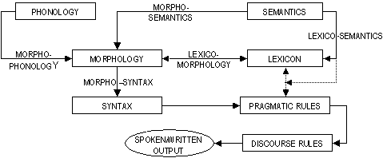

Ces pages webs présentent la
grammaire d'une langue construite artificielle humaine, Ithkuil,
qui fut bâti avec les objectifs suivant en tête:
L'ithkuil représente l'apogée de mes essais et efforts sur plus d'une trentaine d'années pour remplir ces buts. Il devra être noté que l'ithkui n'a pas été construite dans le but de fonctionner comme ce qu'un langue humaine “naturelle” pourrait faire. Cette langue exist comme une exploration de comment les langues humaines pourraient fonctionner, et non comment le langues humaines doivent fonctionner.
Comment la Langue fonctionne |
La capacité de l'ithkuil à exprimer vastement des détails cognitifs de la façon la plus concise possible est due à la nature de sa grammaire, essentiellement une matrice de concepts grammaticaux et de structures faites pour être compacts, combinables, et réutilisables. Ce grammaire à la manière d'une matrice est associée à un lexique/vocabulaire de radicaux sémantiques qui (1) sont capables d'un haut degrée de flexibilité et de synergie avec ces matrices; (2) ont été complètement reconceptualisés à partir d'observations cognitives, et sans lien avec leurs correspondances avec les racines des mots actuelles et les catégories grammaticales dans les langues existantes; et (3) reflètent les dépendances inhérentes et les interractions entre les différents éléments sémantiques. Ainsi, les morphèmes de cette langue (par exemple les mots-racines, suffixes, préfixes, catégories grammaticales, etc) sont aussi phonétiquement brèves que possibles, fonctionnent dans de multiples rôles les unes par rapport aux autres, et correspondent avec plus de précisions aux catégories cognitives humaines que les autres langues naturelles. De cette façon, un nombre limité de sons et de mot-racines peut être pensé dans le but de générer un vaste arrangement des variations et dérivations correspondant et même surpassant tout ce que peut faire avec les fonctions grammaticales et sémantiques avec les stocks de mots, phrases, et autres constructions idiomatiques que l'on peut retrouver dans les langues naturelles.
De plus, ces catégories grammaticales particulières, combinées avec une dérivation morphologique systématique et hiérarchique, permettent une transparence et flexibilité extrême dans:
Comme exemple de la richesse morphologique et l'efficacité possible de cette langue, on peut examiner la phrase ithkuil suivante, comparant sa traduction littéral en français:
Tram-mļöi hhâsmařpţuktôx.TRADUCTION:
‘Au contraire, je pense qu'il se peut que cette chaîne de montagnes irrégulière s'affaisse à un certain point.’NB: Voir la Phonologie, Section 1.2, pour s'informer de la prononciation de l'orthographe romanisée utilisée pour transcrire les caractères ithkuils,
Le lecteur pourra se demander pourquoi une phrase d'environ dix-neuf mots en français peut se traduire par une phrase ithkuil de deux mots. Certains pourront dire que la phrase “triche” dans le sens que ces deux mots ithkuil ont simplement un sens particulier et spécialisé. S'il est vrai que le premier mot, tram-mļöi, se traduit comme ‘Au contraire, il se peut qu'à un certain point…,’ et le second, hhâsmařpţuktôx, comme ‘J'ai le sentiment que cette chaîne de montagnes irrégulière s'affaisse,’ il serait totalement érroné de conclure que ce sont simplement deux mots autonomes que n'importe qui peut trouver dans un dictionnaire ithkuil. Certes, l'unique part de la proposition qui représente une quelconque “racine” de mot est -âsm-, racine qui ne veut rien dire d'autre que ‘colline’. Le reste de la phrase est fait entièrement de composants morphologiques (et non lexicals), tels des préfixes, des suffixes, des infixes, des permutations de voyelles, des accentutations, des tons, etc. Par exemple, le premier mot, tram-mļöi, est composé de trois parties comme montré ci-dessous:
|
1. |
tr(a)- |
= |
un affixe indicant la réfutation d'une allégation, traduisible par ‘Au contraire…’ |
|
2. |
m-mļ- |
= |
un infixe portant les deux informations aspectuelles, traduisible par ‘il se peut que’ ou ‘il s'avère que’ auquel on ajoute le subjonctif, ce qui peut se traduire par ‘(il) se peut que…’ |
|
3. |
-öi |
= |
un suffixe aspectuel traduisible par ‘à un certain point’ ou ‘quelque part sur la voie’ |
Le second mot, hhâsmařpţuktôx, se décompose morpho-phonologiquement comme:
|
1. |
hh- |
= |
un affixe indiquant une conclusion basée sur l'intuition du locuteur, traduisible par ‘j'ai le sentiment (que)…’ |
||
|
2. |
-âsm(a)- |
= |
une racine signifiant ‘colline’, à son tour dérivée de -sm- indiquant la hauteur du paysage |
||
|
3. |
-řpţ- |
= |
un affixe indiquant (1) que la racine doit être réinterprétée comme comprenant une entité composite de membres non-identiques les uns par rapport aux autres dans un tout segmenté (i.e., ‘colline’ devient ‘des collines de hauteurs inégales’), et (2) que l'entité montre une diminution de hauteur (i.e., ‘s'affaisse’ ou ‘décroit’) |
||
|
4. |
-ukt- |
= |
un suffixe démonstratif traduisible par ‘ce’ (=celui dont on parle’ ou ‘celui en question’) |
||
|
5. |
-ôx |
= |
un suffixe indicant que la racine doit être réinterprétée comme étant d'une taille très large, et même que cette accroissement crée une nouvelle entité, i.e. pas simplement une ‘une colline très large’ mais plutôt ‘une montagne’ |
||
|
6. |
accent sur la penultième syllable |
= |
donne une informations partielle sur comment la racine dérive spécifiquement de sa racine sémantique |
||
|
7. |
ton descendant (non marqué) |
= |
état reflétant une fin-en-soi plutôt qu'une situation orienté pour un but |
||
En plus de sa morphologie, l'ithkuil est également différent des autres langues au sens où son lexique (l'ensemble des mots-racines) a été crée aussi bien que les principes sous-jacents de sa lexico-sémantique (les relations entre les mots et leurs significations). Dans les langues naturelles, le choix de quels concepts et catégories sera ouvertement tirés des mots-racines est arbitraire et non-systématique (tandis que, dans la plus part des langages inventés, le lexique est largement consciemment ou inconsciemment influencé par les langues naturelles). S'il est vrai que virtuellement tous les langages reflètent une certaine base universelle du choix des mots (e.g., toutes ont des mots soleil, lune, parler, mère, père, rire, je, tu, deux, un eau, sang, noir, blanc, chaud, froid, etc.), la manière de créer ces mots est hasardeuse et avec peu d'attention sur les interractions entre les concepts basiques. Il en résulte que, dans la plupart des cas, il existe une pléthore de racines de mots distinctes et séparées qui ne portent pas de relations morpho-phonologiques ou morpho-sémantiques les unes par rapport aux autres (i.e. les motifs de sons utilisés pour créer des mots spécifiques ne sont pas systématiques et indépendants pour chaque racine de mot, sans regarder si ces racines sont sémantiquement ou cognitivement rattachées les unes aux autres). Les racines ithkuils ont été créees de manière plus efficace et systématique, avec une reconnaissance que les interractions et entrelacements entre des larges ensembles de mots séparés dans d'autres langues peuvent être formalisées et systématisées dans un vaste arrangement ou une matrice de règles dérivationnionelles; le résultat étant une réduction drastique du nombre du nombre des mot-racines basiques, ce qui permet aux racines individuelles d'être extrêmement compact phonologiquement parlant.
Par exemple, considérer les séries suivantes de mots français: voir, vue, vision, mire, entrevoir, apercevoir, fixer, panorama, aperçu, yeux, visualiser, coup d'oeil, examiner. Noter comment chacun de ces mots autonomes et séparés, malgré le fait qu'ils partagent un seul concept sémantique sous-jaccent les uns avec les autres (auquel on peut se reférer comme VUE/VISION), chacun représente une simple manipulation de différents aspects, perspectives ou manière de participer rattachés à ce concept sous-jaccent. Ce qu'il y a de plus, c'est que ces manipulations sont, en long et en large, hasardement choisies, vagues, subjectives, et particulières à ce concept sous-jaccent (i.e., les manipulations perspectuelles/aspectuelles s'applicant à VUE/VISION sont différentes des celles qui s'appliquent au concept de TRANSMISSION DE LA POSSESSION, duquel dérive la série donner, recevoir, prendre, voler, offrir, prêter, emprunter, envoyer, etc.).
En ithkuil, c'est le concept sous-jaccent déterminant lexifié à travers un mot-racine, qui ensuite engendre une série de modifications régulières, prédictibles, et universellement applicables à la morphologie (i.e. à la grammaire) pour générer de nouveaux mots qui, dans certains cas, trouveront des équivalents en français, mais dans la plupart, dépasseront de loin le dynamisme et l'amplitude de tel séries de mots français.
Un autre principe sous-jaccent à la formation des mots en ithkuil est la complémentarité. Les pensées et les langues occidentales reflètent généralement la logique aristotélicienne, en ce sens qu'elles conceptualisent le monde et les relations, entre les entités discrètes dans ce monde. L'ithkuil, d'un autre côté, voie le monde comme étant basé sur des principes complémentaires où, à la place d'une indépendance discrète entre les entités apparentées, de tels concepts sont vus comme différents aspects complémentaires d'une seule entité holistique. Par “complémentaire” est exprimé que les manifestations d'un concept apparaissent dans tous les concepts donnés, comme, soit une telle sorte d'entité, soit une autre, mais jamais les deux simultanément. Cependant, aucune des manifestations ne peuvent être considérées comme être un tout discret sans l'existence de l'autre manifestation. Une simple illustration de la complémentarité est le lancée d'une pièce: elle peut seulement atterir que sur un des deux côtés, et sans les deux côtés qui font partie de la pièce, aucun lancée de pièce n'a de sens ou d'intérêt contextuel, peut importe la face qui est au-dessus.
Par exemple, les langues occidentales, des mots tels que mâle, nuit, membre, être assis, et se produiresont parfaitement autonomes, représentant linguistiquement ce qui peut être considéré comme des concepts mentaux basiques ou primitivement sémantiques. Toutefois, en ithkuil, aucun de ces mots n'est considérés comme étant un primitif sémantique. À la place, ils sont vus comme faisant parties d'un plus grand, plus holistique, concept sémantique, existant dans les relations complémentaires avec une autre partie, les deux ensembles créant le tout.
Ainsi, la structure lexical de l'ithkuil reconnaît que le mot mâle n'a pas de sens sans une reconnaissance de son partenaire complémentaire, femelle, ces deux mots étant tous les deux dérivés d'un concept holistique plus basique; traduisible en français comme être vivant. De même, le mot nuit dérive avec son complémentaire le jour d'un concept sous-jaccent traduisible comme jour (au sens d'une période de 24 heures), tandis que membre, avec ses complémentaires tronc ou torse, dérivent d'un unique radical, corps (corporel).
Les actions, elles aussi, ne sont pas exemptent de ce principe de complémentarité, par exemple la relation entre s'asseoir et siège; l'un n'a pas de sens sans la relation implicite avec l'autre, i.e., on ne peut pas s'asseoir s'il n'y a pas quelque chose sur lequelle s'asseoir; et, quelque soit la chose sur laquelle on s'asseoit, cela devient un siège. On peut voir la tentative peu commode du français pour décrire conjointement les perpespectives dépendantes mais mutuellement exclusives quand on compare les phrases Asseyez-vous s'il-vous-plaît et Soyez assis s'il-vous-plaît. On peut également relever l'exemple des mots se produire ou survenir, que l'ithkuil reconnaît comme n'ayant pas de réel sens sans une implication de la consequence ou résultat, les deux étant des composants complémentaires d'un concept holistique grossièrement traduisible comme évènement ou situation.
Le mot ithkuil pour trou illustre un autre aspect de cet complémentarité. Les trous peuvent vus de deux perspectives différentes, mais liées: soit comme une ouverture connectant deux différents espaces (ou un point d'accès à un espace précédemment inaccessible, i.e. un creux), ou une discontinuité dans la surface ou l'intégrité structurel d'une entité séparant deux domaines. En d'autres termes, un peu se concentrer sur une fonction potentielle ou une conséquence du trou, et l'autre sur la naturel structurelle du trou. Les deux perspectives représente un légitime, mais complémentaire chemin de considérer un trou {or a puncture}. Ainsi, le mot ithkuil aurait deux racines dérivées, chacune indicant une de ces deux perspectives. Une des racines pourrait être utilisé pour dire Il y a un trou dans ton tee-shirt, quand l'autre pourrait être utilisé quand l'on dit Elle m'a vu à travers un trou dans la cloture.
L'ithkuil reconnaît qu'une telle complémentarité existe pour virtuellement tous les concepts, du fait que ces l'un des principes fondamentaux de l'univers lui-même. On ne peut parler d'aucun rayon de lumière sans une reconnaissance implicite de sa source. On ne peut décrire aucun signal sans prendre en compte son émetteur. En effet, en ithkuil, il n'existe pas de rivière sans lit, pas de surface sans firmament, pas de message sans transmetteur, pas d'impression sans faculté de perception, pas de contenu sans leur(s) contenant(s), pas de fait sans sa conséquence, pas de souvenir sans sa réminisence, pas de plan sans son objectif, pas de musique sans son interprétation, pas de soulagement sans une précédente privation, pas de plaisir sans son absence, pas de mouvement sans espace dans lequel bouger.
Les autres principes sous-jaccent de le système de dérivation des mots de l'ithkuil incluent les principes liés de la logique floue, la théorie des prototypes et de la catégorisation radiale. L'inclusion de ces principes dans l'architecture de la formation des mots permet aux racines d'être groupées dans des types variées d'ensembles affiliés, chacun d'eux fonctionnant alors comme une gestalt conceptuelle; les membres individuels de chacun étant marqués comme ayant des degrés variant et des relations ou similarités à un membre prototypaire hypothétique de cet archétype. Ainsi, l'ithkuil est capable de dériver systématiquement les mots comme foule, manifestation, troupe, groupe, club, association, assemblée, et réunion de l'unique racine personne (individu). De même, des mots comme bosquet, verger, forêt, bois, jungle, et taillis peuvent être tous dérivés de l'unique radical arbre.
Comme un des derniers exemples explicant le dynamisme et la concision lexico-sémantique de l'ithkuil, on peut considérer la liste suivante de mots français: trempé, humide, moite, sec, asséché, désséché. Plutôt que produire des mots séparés et autonomes pour ces concepts, l'ithkuil reconnaît qu'ils indiquent tous des différents degrés d'humidité, tout au long d'une gamme continue. De telles continuités serait adressées par une seule racine qui signifierait approximativement (DEGRÉE D') HUMIDITÉ, pour laquelle une panoplie de simple suffixe serait ajoutée pour spécifier le degré tout au long de cette échelle, de désséché à saturé en passant par trempé. Tous ces phénomènes, qui dans les langues occidentales tendent à s'aligner sémantiquement par des oppositions binaires (par exemple dur/souple, lumière/obscurité, profond/peu profond, etc); sont reconnus et lexifiés comme d'uniques racines qui utilisent systématiquement des suffixes pour spécifier le degrée ponctuel au cours d'une gamme continue.
Les paragraphes précédents illustrent comment l'ithkuil est capable de saisir et systématiquement présenter ce que les autres langages accomplissent hasardeusement au niveau lexical. En trouvant systématiquement et en structurant les dépendances et les relations entre ceux qui sont des mots disparates dans les autres langages, les centaines de milliers de mots comme une langue comme le français sont drastiquement réduits à approximativement 3600 mots racines en ithkuil. Cette efficacité morpho-lexical a une grande amplitude. Néanmoins, grâce à des schémas morphologiques à la façon de matrices précédemment décris, chacune de ces racines peut générer des milliers de combinaisons pour générer des distinctions sémantiques complexes et subtiles qui réduisent la capacité des langages existants pour transmettre un message sans recourir à d'encombrantes paraphrases. Cette efficacité lexico-sémantique et morpho-sémantique est également efficace à grande échelle. De telles conceptions synegistiques, pour la grammair apportent un dynamisme qui permet à l'ithkuil de décrire avec précision et exactitude, en dépis d'un nombre limité de mot-racines. Ce dynamisme est visible à travers ce travail, mais est discuté dans sa totalité dans Chapitre 10: Lexico-sémantique.
À propos de l'imprécision inhérente aux langues naturelles |
Pour illustrer plus précisément à quel niveau cognitif l'ithkuil opère, on peut considérer un des aspects les plus répandus des langues humaines naturelles: l'imprécision sémantique, avec par exemple les quatres phrases françaises suivantes:
(a) Le garçon roule en bas de la colline.
(b) Peut être qu'elle a juste arrêté de fumer.
(c) Joe n'a pas gagné à la lotterie hier.
(d) Il y a un chien dans mon porche.
En examinant ces quatres phrases, la plupart des locuteurs français natifs nieraient l'existence d'une imprécision. C'est parce que cette imprécision n'existe pas en terme de sens explicitement exprimé des sens des mots eux-mêmes. Elle s'étend plutôt à un niveau presque subconscient de leurs relations grammaticales (ou syntaxiques), et de leurs intentions cognitive. Par exemple, dans la phrase (a), on ne sait pas si le garçon a choisi de rouler en bas de la colline, ou s'il a été poussé contre sa volonté (dans des termes linguistiques formels, on dirait qu'on ne sait pas si le rôle sémantique du sujet ‘garçon’ est agent ou patient.) Savoir quel scénario est correct peut être crucial pour comprendre l'intention du locuteur qui décrit l'action.
Imaginez la phrase (b) Peut être qu'elle a juste arrêté de fumer. comme une réponse à la question ‘Pourquoi semble-t-elle si irritable’. En interprétant la phrase (b), on ne peut pas savoir si le sujet est en effet un fumeur ou non; i.e., est-ce que le locuteur offre cette spéculation parce qu'il/elle connaît le sujet comme étant fumeur, ou simplement une conjecture sans connaissance si oui ou non le sujet fume.
La phrase (c) Joe n'a pas gagné à la lotterie hier. illustre quatre possibilité pour une ambiguïté. L'échec de Joe pour gagner à la lotterie peut être soit, parce que: le locuteur sait que Joe n'a pas joué; le locuteur sait que Joe a joué mais perdu; le locuteur ne sait pas si Joe a joué ou non et formule simplement une conjecture; ou enfin si le statut est une inférence basée sur quelques indices indirectes (e.g., puisque Joe s'est montré au travail aujourd'hui, il ne doit pas avoir gagné à la lotterie).
Et alors que la phrase (d) Il y a un chien dans mon porche. semble être, en surface, être la plus honnête des quatre, est-ce l'intention du locuteur de simplement décrire et identifier les participants d'une scène ou souhaite-elle transmettre l'idée que la scène a une signification personnelle pour elle, par exemple parce qu'elle a une phobie des chiens, ou parce qu'elle a attendue très longtemps pour que son chien retourne à la maison? En d'autres termes, la phrase elle-même ne transmet pas l'intention derrière l'expression, seulement la description statique de la scène.
Dans ces quatres phrases, une telle imprécision existe à moins et avant que l'audience puisse certifier l'information à partir du contexte environnant des autres phrases. Cela montre que, malgré le fait que ces quatres phrases sont grammatiquement très bien formées d'après la grammaire française, ces mots seuls sont en eux-mêmes ambiguës, et la grammaire est insuffisante pour transmettre l'information cognitive nécessaire à la compréhension complète des intentions du locuteur. Cet échec de la grammaire à transmettre les informations requises nécessaires pour comprendre les intentions cognitives du locuteur est un gouffre fonctionnel des langues humaines en général; que la grammaire de l'ithkuil a été faite pour éviter. Les équivalents ithkuils de ces quatres phrases toutes les informations “manquantes” notées au-dessus sans requérir aucun mot de plus qui ne correspondrait pas à la phrase originale française. Les éléments grammaticales des mots eux-mêmes (sélection des mots, déclinaisons, conjugaison, suffixes, préfixes, etc) transmettraient tous les éléments mentionnés.
Des exemples similaires peuvent être donnés pour montrer la tendance des langues naturelles comme le français à souvent créer des expressions idiomatiques, métaphores, périphrases, circonlocutions, et des phénomènes “supra-segmentals” (comme le changement de ton de la voix du locuteur), dans leurs tentatives de transmettre l'intention du locuteur et son sens. La grammaire de l'ithkuil a été créée pour être explicite et non-ambiguë, et ainsi refléter les intentions du locuteurs avec un minimum de tels phénomènes.
Comparaison avec d'autres langues construites |
Les lecteurs familiers avec l'histoire de la construction des langues construites pourraient penser que cette tentative tardive et non-nécessaire, en ce que des langues logiques comme le renommé Loglan de James Cooke Brown's (ou son dérivé populaire Lojban) existe déjà. Cela sert à illustrer exactement ce qui distingue l'ithkuil de tels précédents essais. La loglan a été publié dans les années 1950 comme une langue écrite et parlée basée sur une logique symbolique (connue formellement sous le nom de calcul des prédicats du premier ordre), un système algorithmique de manipulations de symboles conçu par les mathématiciens et logiciens. Ainsi, on pourrait penser qu'une telle langue est le meilleur moyen, capable d'une communication logique et linguistique non-ambiguë. Pourtant, loglan et ses dérivés sont simplement des outils sophistiqués pour la manipulation des symboles, i.e., les sous-domaines de la linguistique connus comme la morphologie et la syntaxe. Ce n'est pas avec la portée de telles langues qui peut produire une organisation des contrées sémantiques. Cela signifie que la logique symbolique manipule simplement les arguments qui sont incorporés au système, et n'analyse pas l'origine de ces arguments en terme de sens, pas plus qu'elle n'est capables de formaliser la structure de ces contrées cognitives ou sémantiques de l'esprit humain, en terme de comment le sens lui-même est assigné aux éléments. (En effet, le lojban choisit ses racines via un “échantillonage” statistique des racines les plus fréquentes dans les six langues naturelles les plus parlées, une méthode virtuellement garrantie pour porter dans le lexique lojbanique toutes les inefficacités précédemment décrites.) En n'addressant pas ses composants du langage, la loglan et ses efforts similaires échouent à relever les inconsistances et les inefficacités inhérentes du langage au niveau lexico-sémantique. L'ithkuil a été crée pour systématiquement remplir cet objectif.
D'autres lecteurs pourraient penser que les langues internationales (ou “interlangues”) comme l'Esperanto, l'Interlangua, ou l'Ido, comme étant des représentations logiques et efficaces du langage. Pourtant, ces langues sont des représentations simplifiées et régularisées de langages existants (souvent Indo-Européennes), crées pour la facilité d'apprentissage. Tout en traitant ouvertement nombreuses irrégularités, inconsistances et redondances de la langue trouvées aux niveaux morpho-phonologiques et morpho-syntaxiques, elles font peu pour trouver une solution aux problèmes des autres composantes du langage, et plus particulièrement la lexico-sémantique. Par exemple, si l'espéranto emploie admirablement des règles systématiques pour la dérivation des mots comme knabo ‘garçon’, et knabino ‘fille’, cela préserve les schémas de la catégorisation basique lexico-sémantique des langages indo-européens en général, plutôt que de chercher les opportunités pour étendre de tels schémas de déclinaisons des mots en de multidimensionels arrangements comme cela est fait en ithkuil.
Enfin, aucune des langues logiques comme la loglan ni les interlangues comme l'esperanto ne sont crées spécialement pour remplir l'objectif de l'extraction cognitive et de la concision de la communication, ce qui est un des buts de l'ithkuil. En fait, l'ithkuil pourrait être plus comparé à la langue analytique de John Wilkins de la Royal Society de Londres, publiée en 1668, dans laquelle il divise les contrées de la conceptions humaines en quarante catégories, chacun contenant une hiérachie de sous-catégories et sous-sous-catégories, chacun représentant systématiquement la structure phonologique d'un mot individuel. Bien qu'inutilisable en terme de spécificités, les principes sous-jaccents de Wilkins sont similaires à un moyen simpliste de quelques principes abstraits dérivationnels dans la lexico-mmorpĥologie et lexico-sémantique d'ithkuil. Un prédecesseur comparable est le langage musical, solresol, crée par Jean-François Sudre, publié en 1866.
Une Brève Histoire du Développement du Langage |
La création de l'ithkuil a lentement et laborieusement évolué de mes premiers essais comme adolescent (suivant mon introduction à l'hypothèse de Sapir-Whorf et à l'article de 1968 du séminaire de Charles Fillmore sur les cas grammaticaux) pour explorer à travers les liens des langues occidentales indo-européennes à une complexe, intrication d'arragements entretissés entre les concepts grammaticaux, dont la plus part sont entièrement ma propre création, et d'autres inspirés par d'obscures sources linguistiques comme la morpho-phonologie des verbes complexes de l'abkhaz, les états des verbes de certains langages américano-indiens, le système aspectuel des langues Niger-Kordofanian, les systèmes des cas nominal du basque et des langues dagestanian, le système enclitique des langues wakashan, l'orientation positionnelle du Tzeltal et du Guugu Yimidhirr, les racines morphologiques trilitérales sémitiques, et les catégories possessives et impressions de la langue de Suzette Elgin, Láadan, sans mentioner les idées inspirées par les inombrables heures à étudier la linguistique théorique, la sémantique, la sémiotique, la grammaire cognitive, la psycholinguistique, l'acquisition du langage, la relativité linguistique, la philosophie, la théorie des ensembles floues, et même la physique quantique. Les écrits des linguistiques cognitifs américains George Lakoff, Ronald Langacker, Gillers Fauconnier, et Len Talmy ont particulièrement influencé la création de l'ithkuil.
Le système d'écriture de l'ithkuil dérive de sources originales et inspirées: il emploie un unique principe “morpho-phonemique” de mon propre cru; son style logique emprunte les principes multinationales sous-jaccents des écrits ethiopiens et brahmi, et son esthétique visuel porte une ressemblance visuelle à l'écriture carré hébreuse, et à diverses polices klingon.
La première version de l'ithkuil a été à l'origine, posté sur internet dans le début de l'année 2004. Une seconde version alternative appelée ilaksh fut posté mi-2007, créee spécifiquement pour répondre aux requêtes demandant une phonologie (système de sons) plus simple. Durant la modification de la version originelle d'ithkuil à ilaksh, j'ai réalisé qu'il y avait beaucoup d'aspect que je pouvais incorporé en retour à l'ithkuil, sans les contraintes de l'ilaksh sur le nombre de consonnes et de voyelles. Cela autoriserait (avec espoir) le langage à être plus euphonique à l'oreille, tout en maintiendrait sa concision morpho-phonologique. En outre, le recul m'a permi de repenser finement quelques points de la grammaire, que cette dernière version m'a permi d'inclure dans la langue.
Introduit en juillet 2011, cette troisième version de la langue (qui retient le nom d'“ithkuil”, sans rapport ni continuité avec la version originale) reflètent ces idées et constitues maintenant ce que je considère comme être la version définitive (ou “officiel”) de cette langue. Son nom est anglicisé du mot iţkuîl, qui signifie plus ou moins “représentation hypothétique d'un langage” dans la version originelle de l'ithkui.
À propos de la présentation de la grammaire |
Ce site web développe une présentation systématique de la grammaire de l'ithkuil. En plus de la description d'un grande variété de composants de cette dite grammaire, le lecteur pourra trouver des exemples de phrases ou propositions illustrants ces composants. Les liens de navigations en haut et en bas de la page mènent aux chapitres sur la majeur partie des composants grammaticaux de l'ithkuil, et devraient être lu dans l'ordre croissant, l'un supposant la connaissance du précédent. Si cette grammaire présente uniquement un savoir basique des concepts linguistiques, il sera agréable au lecteur de se familiariser brièvement à la structure schématique du langage humain en général, car l'organisation de cette grammaire est basée approximativement sur cette structure. L'analyse du langage humain peut être organisée comme l'analyse suivante de concepts primaires:
Les interractions entre ces composants peuvent être illustrées par le diagramme suivant:

Chaque exemple comprend un mot, une phrase, ou une proposition ithkuil écrit dans l'écriture propre à cette langue; accompanié par une transliterration romanisé; une traduction française (parfois découpée entre une version “naturelle” par rapport à une version littérale); ainsi que l'analyse morphologique. Cette analyse morphologique est présentée en série, morphème par morphème, utilisant d'abbréviations de trois lettres ou d'étiquettes pour les catégories de la morphologie de l'ithkuil. Ces labels sont présentés dans le corps du travail en agrément avec l'explication de chaque catégorie morphologique. Une liste de ces abbréviations est également consultable sur le menu de navigation principale en haut et à la fin de chaque page du site.
Cette travail n'est pas présentée comme une amorce ou un manuel de comment parler l'ithkuil; une tache même hors-portée de son créateur, faisant de l'ithkuil peut être la langue la plus complexe grammaticalement parlant ayant jamais existé. La simplicité n'a pas été mon objectif, mais plutôt raccorder la brèche entre un dynamisme morphologique extrême, une réflection ouverte des processus cognitives humains qui procèdent par le langage, et une extrême économie et efficacité morpho-sémantique. Je crois que j'ai accompli un résultat qui est proche de l'idéal auquel j'aspirais. Je laisse au lecteur le soin d'en explorer le résultat.
Mon travail sur l'ithkuil est dédié à mon frère Paul, en souvenir de Kccoj, Mbozo, et tous les bons moments avec lesquels nous avons grandis, jouant avec le langage et la linguistique. Aniamtrexu tanskbitero!
Et je dédis cette nouvelle version de 2011 à Ms. Alla Vishneva, qui enseigna l'ithkuil à des étudiants, à Kiev, Ukraine; et pour qui mon travail est aussi important qu'à moi. Дякую, Алла. Ти маєш рацію!
—John Quijada
July, 2011
©2004-2011 par John Quijada. Vous pouvez copier ou extraire n'importe quelle partie des contenus de ce site web pour une utilisation privée, individuelle ou personnelle, qui est par nature non-commerciale et non pour des objectifs de profits. Autremement, vous pouvez copier ou extraire de brèves parts des contenus de ce site web dans des articles, papiers, pages webs, publiées, accessibles sur le web, ou distribué commercialement; pour des objectifs de révision, de commentaire, ou d'analyse; à condition que vous en donniez la pleine attribution à l'auteur de ce site web.